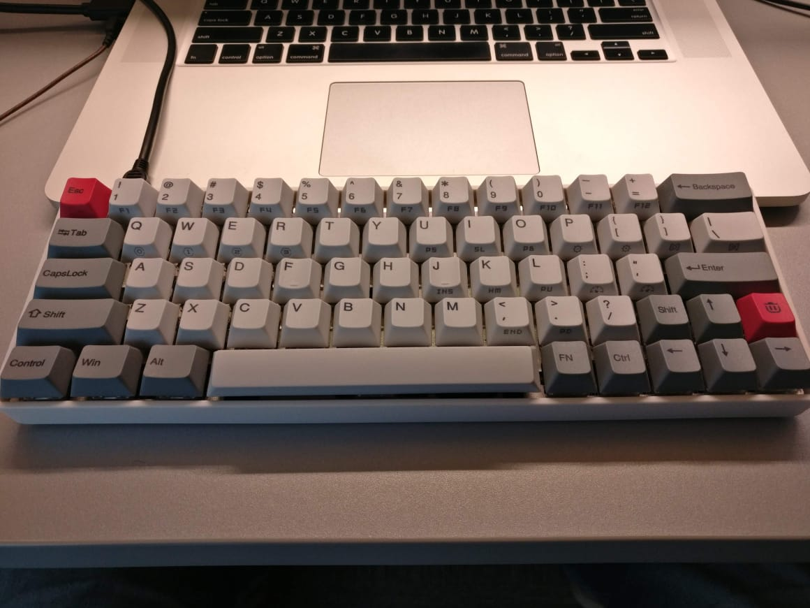
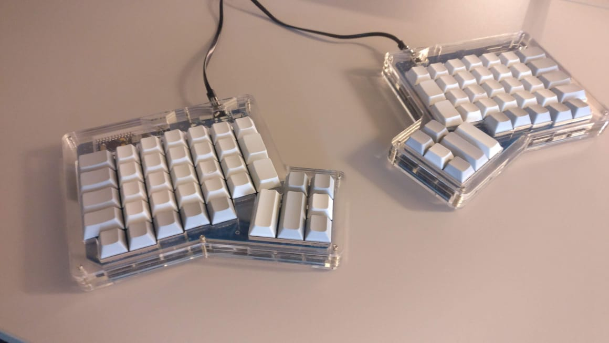

| Foto | Descrição | Preço (R$) | Quantidade disponível |
|---|---|---|---|
| Teclado mecânico com switches Gateron Brown, keycaps em PBT sem legendas. Construção interna em alumínio, carcaça em ABS. |
R$650,00 | 3 | |
| Teclado mecânico 60%, com switches Zealios, keycaps profile XDA e iluminação RGB. | R$800,00 | 1 | |
|  | Teclado 60% com keycaps dye sublimated, carcaça em ABS, construção interna em alumínio e switches Zealios 67g. | R$800,00 | 1 |
|  | Ergodone com Cherry MX Clears, carcaça toda em acrílico cortado a laser. | R$1000,00 | Sob encomenda |
| Teclado com carcaça em alumínio anodizado preto, construção interna em aço inoxidável, keycaps em PBT, switches Kailh Box Navy Blue. | R$800,00 | Sob encomenda |